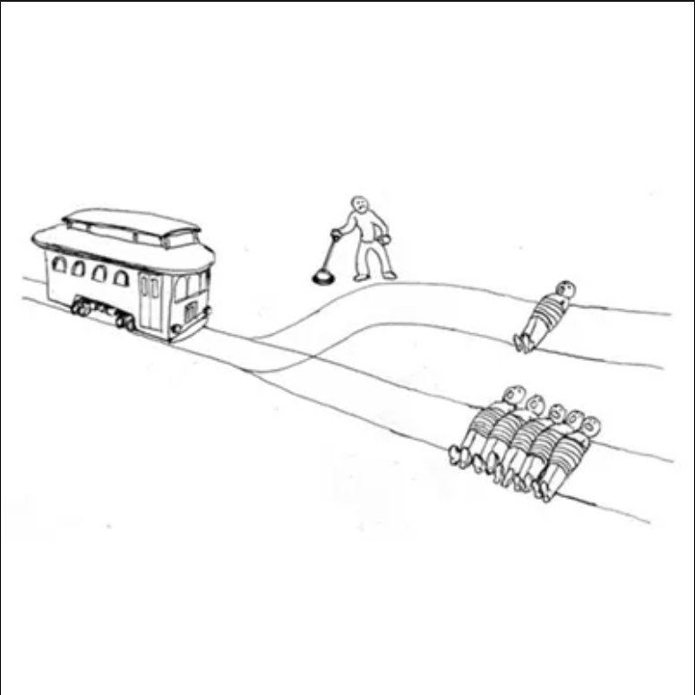

I asked GPT-4 to create stories that “end with a controversial, crazy moral dilemma with no solution given.” Then I wanted to use a separate thread to be a “moral philospher” to see how it reacts to each scenario. We’ll go over 3 story-like dilemmas, then quickly do a couple either-or choices like we did in class few weeks ago.
First Story: Crossroads at Midnight
Setting: A small, isolated coastal town that is known for both its tight-knit community and its reliance on the fishing industry.
Plot Outline:
- Introduction:
- Introduce the protagonist, Samira, a young doctor who recently moved to the town to replace the retiring community physician.
- Highlight her challenges in adjusting to the town’s unique way of life and her efforts to gain the trust of the locals.
- Rising Action:
- Samira begins to notice an unusual pattern of illnesses among the townsfolk, primarily among children and the elderly. Symptoms are severe but non-specific, causing widespread concern.
- After extensive testing and research, Samira discovers the cause: the town’s primary water source is contaminated with a rare, naturally occurring toxin.
- Climax:
- Samira faces a dire choice when a storm cuts off all incoming roads, leaving the town isolated right as she discovers the contamination.
- She has a limited supply of a costly antidote that can neutralize the toxin’s effects, but not enough for everyone. The antidote is experimental, with potential severe side effects.
- The town’s annual festival, which draws most of the community, including many vulnerable individuals, is set to take place the next day.
- Controversial Dilemma:
- Samira must decide whether to:
- Administer the antidote secretly to only the most vulnerable (children and the elderly), risking severe side effects without their consent.
- Publicly announce the contamination and cancel the festival, causing panic and potential economic fallout for the community that heavily relies on the festival for income.
- Do nothing and hope for rescue, trying to treat symptoms as best as she can, which risks lives but avoids the ethical issues of forced medication or economic damage.
- Samira must decide whether to:
- Conclusion: The story ends with Samira walking to the town square at midnight, the antidote in her bag, as the first sounds of the festival preparations echo through the night. The decision looms large, with no clear right answer.
Moral Philosopher Analysis
I prompt engineered the GPT philosopher to be like the following, before I gave the story:
Me: You are a moral philosopher. I am going to give you a story and I want you to deeply analyze each decision, its possible consequences, and assign a very specific 1-100 rating as well as an expected value for each decision.
Now, the analysis:
Samira’s situation presents a deeply challenging ethical landscape, where her decisions could significantly impact the health and well-being of an entire community. Here’s a detailed analysis of each decision she could make, considering the possible consequences and assigning a specific moral rating and expected value to each:
- Administer the Antidote Secretly Description: Samira could choose to administer the antidote secretly to only the most vulnerable—children and the elderly. This option prioritizes the immediate health risks but raises serious ethical concerns regarding consent.
Pros:
- Potentially saves the lives of the most vulnerable.
- Reduces the immediate impact of the toxin.
Cons:
- Violates the ethical principle of informed consent.
- Risk of severe side effects from an experimental treatment without prior approval or knowledge of the recipients.
- Could damage trust in healthcare providers if discovered. Moral Rating: 45/100. This option compromises on ethical norms of consent and transparency in healthcare, though it aims to protect life.
Expected Value: The benefits of potentially saving lives weigh against the high ethical costs and the risk of side effects. This could be rated at around 50 out of 100, reflecting the severe ethical trade-off involved.
- Publicly Announce the Contamination and Cancel the Festival Description: By choosing to publicly announce the contamination and advising to cancel the festival, Samira would prioritize public safety and transparency.
Pros:
- Upholds ethical standards of honesty and transparency in public health.
- Allows individuals to make informed decisions about their risk.
- Prevents a larger health crisis by stopping the gathering.
Cons:
- Could cause immediate economic damage to the town, which heavily relies on the festival.
- May incite panic and social unrest, possibly complicating the situation further.
- Moral Rating: 75/100. This decision respects individual autonomy and the principle of “do no harm” by preventing potential exposure to the toxin.
Expected Value: Considering the balance between ethical responsibility and potential economic fallout, this decision could be rated around 70 out of 100. The ethical gains are significant, though the economic consequences are non-negligible.
- Do Nothing and Hope for Rescue Description: Choosing to wait for external rescue and treat symptoms as they arise avoids the ethical dilemmas of non-consensual treatment and the economic impact of canceling the festival.
Pros:
- Avoids the ethical issue of administering an experimental treatment without consent.
- Maintains economic stability by not disrupting the festival.
Cons:
- Risks lives, especially if rescue is delayed or ineffective.
- Passive approach may be seen as neglectful or cowardly. Moral Rating: 30/100. This decision likely violates the medical ethical principle of beneficence, where a doctor is obliged to act in the best interest of the patient.
Expected Value: The risk to life, particularly for vulnerable groups, heavily outweighs the benefits of non-interference. This could be rated around 25 out of 100, given the high potential for negative health outcomes.
Conclusion Each decision presents a unique set of ethical challenges and potential outcomes. Samira’s final decision, walking to the town square with the antidote, reflects the immense weight of her dilemma. The most ethically sound decision appears to be to publicly announce the contamination and cancel the festival, balancing transparency and public health while acknowledging the tough economic consequences.
Clearly, by these scores, it had some priority ranking that it followed in order to assign the scores, with trust/transparency in this scenario being the prevailing priority. So I was curious about its underlying reasonings and if they may be different in alternate scenarios:
Me: analyze the underlying philosophical and moral concepts underneath each decision and how they compare and contrast from each other, what is good and bad about each, and if different contexts might lead different results.
GPT: The ethical dilemma Samira faces in the story involves several foundational moral concepts, primarily from the domains of medical ethics and public health ethics. Each decision touches on principles such as beneficence, non-maleficence, autonomy, justice, and utilitarian considerations of the greatest good for the greatest number. Let’s explore how these principles underpin each decision and how their application varies depending on context:
- Administer the Antidote Secretly Underlying Concepts:
- Beneficence and Non-maleficence: Administering the antidote aims to do good by preventing harm from the toxin, but it risks doing harm through potential side effects.
- Autonomy: This decision infringes on individuals’ right to make informed decisions about their medical treatment, as it involves administering a treatment without consent. Analysis:
Pros: Emphasizes a paternalistic approach where the healthcare provider makes decisions for those they deem incapable of making informed decisions, ostensibly in their best interests.
Cons: Violates the principle of autonomy and could undermine trust in medical institutions.
Contextual Considerations: In a scenario where the population might lack the ability to understand the implications of the antidote (due to age, disability, or educational barriers), a paternalistic approach might be more justified, though still controversial.
- Publicly Announce the Contamination and Cancel the Festival Underlying Concepts:
- Transparency and Autonomy: This choice supports the ethical imperative to be honest and transparent, thereby respecting people’s autonomy to make informed decisions about their risks.
- Justice: Supports treating all town members equally by providing everyone with the same information and opportunity to protect themselves. Analysis:
Pros: Upholds the principle of autonomy and promotes equity and justice by treating all individuals equally.
Cons: Economic repercussions could disproportionately affect those dependent on the festival for their livelihood, potentially violating principles of justice if those impacts aren’t mitigated.
Contextual Considerations: In a setting where the population values economic stability over potential health risks, or where economic impact could lead to longer-term health and social issues, this decision might be less favorable.
- Do Nothing and Hope for Rescue Underlying Concepts:
- Non-maleficence: By avoiding unconsented intervention, this approach avoids direct harm through potential side effects of the antidote.
- Pragmatism: This decision might stem from a pragmatic approach to balancing health risks with economic and social stability. Analysis:
Pros: Avoids the ethical issues associated with forced medical treatment and economic disruption.
Cons: Neglects the principle of beneficence by failing to actively prevent harm; could be seen as violating the duty of care.
Contextual Considerations: If external rescue were guaranteed and swift, the decision to wait might be more defensible. Likewise, if the antidote’s risks were exceptionally high, this non-interventionist approach might be seen as more ethical.
Comparative Analysis - Good and Bad: The good in each decision is tied to which ethical principles are prioritized—health and life in the first, autonomy and transparency in the second, and avoidance of immediate harm in the third. The bad, conversely, relates to which principles are compromised. - Contextual Dynamics: Different settings can shift the ethical calculus significantly. For instance, if the antidote were more reliable and less risky, administering it might seem more justifiable. Similarly, if the economic impact of canceling the festival were less severe (or if there were ways to mitigate it), the second decision might be seen as more clearly preferable.
This analysis underscores the complexity of ethical decision-making in healthcare, where different values must be weighed and balanced, often under conditions of uncertainty and high stakes. Each decision reflects a different prioritization of ethical principles, demonstrating the challenges in achieving a perfectly ethical solution in real-world scenarios.
It goes through the trade-offs that would occur in each scenario, and clearly gives reasonings for how decisions could be different in different contexts. It seems like in the actual scenario though, it wants to prioritize equity and justice.
Second Story: The Keeper of Secrets
I was curious about if it would behave any differently if I asked it to identify all the people and factors in play to be affected and rank how important each is to the protagonist before completing any other task. That’s what i did with this story
Setting: A modern urban environment, focusing on a small group of interconnected lives in an apartment building.
Plot Outline:
- Introduction:
- Introduce the protagonist, Leo, a retired private investigator turned novelist, who lives a quiet life in an apartment building with a close-knit group of neighbors.
- Leo is respected and somewhat feared for his past and his ability to uncover secrets. He uses his skills subtly to help his neighbors resolve minor disputes and issues.
- Rising Action:
- Leo receives a series of anonymous letters that contain deeply personal information about his neighbors. The letters detail hidden affairs, financial crimes, and past scandals that could destroy relationships and reputations.
- Leo verifies the information quietly and confirms it’s all accurate, but struggles with how to handle these secrets.
- Climax:
- The sender of the letters is revealed to be a young neighbor, Cassie, who discovered the information accidentally through her job at a data management firm. She confides in Leo, believing he’ll know what to do.
- Cassie urges Leo to expose the secrets, believing that the truth, however painful, is always better than lies.
- She is motivated by her own past, where secrets in her family led to significant personal trauma.
- Controversial Dilemma:
- Leo must decide:
- Whether to use the information to blackmail the neighbors into stopping any ongoing harmful behaviors (e.g., cheating or embezzlement).
- To reveal the secrets to the affected parties directly, potentially destroying several lives and the community’s harmony but allowing for possible healing and fresh starts.
- To destroy the information, preserving the current state of his community but allowing possibly harmful deceptions to continue unchecked.
- Leo must decide:
- Conclusion:
- The story ends with Leo sitting on his balcony, watching his neighbors during a building-wide party, reflecting on the human capacity for secrecy and deception. Each interaction is tinged with the weight of the undisclosed information, leaving readers to ponder what they would do with such power.
Let’s see how it analyzes it now:
GPT: In the story of Leo, a retired private investigator turned novelist, the following are the main individuals and factors to be considered, each affecting the unfolding events and the decision-making process. Here’s an analysis of their relevance and importance to Leo:
Individuals:
- Leo (Protagonist):
- Leo’s personal ethics and past experiences significantly influence his approach to the dilemma. His history as a private investigator and his current role as a community mediator make him central to the decision on handling the secrets.
- Cassie (Young Neighbor):
- As the source of the information, Cassie plays a critical role. Her views on truth and her expectations from Leo, combined with her personal trauma related to family secrets, make her a key influencer in Leo’s decision.
- Affected Neighbors:
- These individuals are the subjects of the secrets and are directly impacted by Leo’s decisions. Their relationships, reputations, and potentially their livelihoods are at stake.
Factors:
- The Nature of the Secrets:
- The severity and variety of the secrets (affairs, financial crimes, past scandals) affect the potential damage their revelation could cause and weigh heavily on the ethical considerations of Leo’s decisions.
- Community Harmony:
- The close-knit nature of the apartment community is a significant factor. The trust and interactions within this small group could be drastically altered by the disclosure of the secrets.
- Ethical Principles:
- Principles like truth, confidentiality, and harm are central to Leo’s decision. His background as an investigator who upholds certain ethical standards influences how he views these principles in his retirement.
Importance Ranking to Leo:
- Ethical Principles and Personal Integrity:
- Likely the most important factor, given Leo’s background and current role in the community. His decision will be heavily influenced by his own moral compass and ethical standards.
- Community Harmony:
- As someone who has become a mediator and problem-solver within his community, maintaining or restoring harmony could be almost as crucial as adhering to his ethical principles.
- Cassie’s Perspective and Influence:
- While Cassie is influential due to her role in bringing the information to Leo, her influence on his decision is likely less than the broader ethical considerations and the immediate community impact.
- Individual Neighbors’ Futures:
- The individual futures of the neighbors are crucial but might rank slightly lower individually than the collective community and ethical considerations. However, their cumulative effect is significant, as it pertains to multiple lives and their interrelations.
- The Nature of the Secrets:
- This factor influences the decision’s potential outcomes but is tied closely to the other factors, particularly how the nature of each secret impacts ethical considerations and community harmony. Leo’s decision, as he reflects on the balcony, underlines the complex interplay of these factors and individuals. Each one contributes to the overarching themes of secrecy, ethics, and community dynamics, framing a narrative that probes deep moral questions about right, wrong, and the shades in between.
Me: Now do the same ranking analysis that you did with the first story
Let’s see if it follows with it’s analysis of the people and factors at play
GPT: Certainly! Let’s apply a similar detailed analysis to Leo’s decisions, assessing potential consequences and assigning a specific moral rating and expected value for each decision he faces in the story:
- Use the Information to Blackmail the Neighbors Description: Leo could use the information he has to coerce the neighbors involved in harmful behaviors (like cheating or embezzlement) to stop these activities.
Pros:
Potentially stops harmful behaviors without public exposure. Uses leverage to enforce ethical behavior secretly. Cons:
Ethically questionable, as blackmail is inherently manipulative and illegal. Maintains secrecy and does not address the underlying issues or promote genuine accountability. Risks creating resentment or backlash if discovered. Moral Rating: 25/100. This approach is coercive and violates ethical norms by using underhanded means to achieve possibly ethical ends.
Expected Value: Considering the unethical nature of blackmail against its potential effectiveness in halting harmful actions, this might rate around 30 out of 100, reflecting the problematic nature of the method despite some potential positive outcomes.
- Reveal the Secrets to the Affected Parties Description: Leo could choose to reveal the secrets directly to those affected, potentially leading to significant personal and communal upheaval but also allowing for transparency and the possibility of reconciliation and new beginnings.
Pros:
Promotes honesty and transparency, allowing affected parties to make informed decisions about their relationships and lives. Could lead to personal growth and stronger relationships built on renewed trust. Cons:
Risks severe immediate emotional distress and potential long-term damage to relationships. Could disrupt the community’s harmony irrevocably. Leo might be viewed negatively for spreading personal secrets. Moral Rating: 65/100. While this action is aligned with ethical principles of truth and transparency, the potential for causing substantial harm tempers its moral score.
Expected Value: Balancing the value of truth with the potential disruption it could cause, this decision could be rated around 60 out of 100. The benefit of clearing deceit is significant, but the costs in terms of personal and community fallout are also substantial.
- Destroy the Information Description: Choosing to destroy the information would keep the status quo, preserving community harmony at the surface level but allowing potentially harmful deceptions to continue.
Pros:
Maintains current relationships and community stability without the upheaval that revelations might cause. Avoids the direct harm that could come from exposing painful truths. Cons:
Allows harmful behaviors to persist unchecked, which could lead to worse outcomes in the future. Fails to address the underlying issues, possibly leading to a buildup of more serious problems. Might be seen as a neglect of moral duty to confront unethical behavior. Moral Rating: 45/100. This decision avoids immediate harm but at the cost of potentially enabling further harm and deceit, thus presenting a significant ethical dilemma.
Expected Value: Given the avoidance of immediate conflict against the risk of ongoing harm, this could be rated around 40 out of 100. The decision prioritizes short-term peace over long-term ethical considerations.
Conclusion Each decision Leo faces involves a balance between ethical imperatives and practical outcomes. The decision to reveal the secrets, although it carries significant risks, appears to be the most ethically robust option, aligning with principles of truth and potential for personal and communal growth. The other options, while less disruptive in the short term, carry ethical compromises that might lead to greater long-term issues.
Yes. Yes, it does.
Third Story: Switch
Now, I wanted to try something traditional: The Trolley Problem. I asked GPT-4 to make a story similar to the ones it just had made, but with the trolley problem. Here it is:
GPT: Setting: A fictional city with an extensive tram network, blending elements of both modern and historical architecture to create a timeless feel.
Plot Outline:
- Introduction:
- Introduce the protagonist, Jamie, a tram operator with years of experience and a deep sense of duty to ensure the safety of their passengers.
- Establish the city’s dependence on its tram system, and how it connects different facets of the city, both geographically and socially.
- Rising Action:
- During a routine shift, Jamie notices an unusual malfunction in the tram’s control system as they approach a well-known junction. The tram cannot be stopped and is hurtling toward a split in the tracks.
- On one track, there is a group of five workers doing unscheduled maintenance, unaware of the oncoming danger. The other track has been redirected to avoid the workers, but a lone child has wandered onto it, absorbed in their surroundings.
- Climax:
- Jamie realizes that the tram’s steering mechanism is still responsive. They face an immediate and horrifying decision: manually switch to the track with the child to save the five workers, or stay on the current track and save the child at the expense of the workers.
- The control panel flickers, indicating that only a few seconds remain to make a decision.
- Controversial Dilemma:
- Jamie grapples with the weight of the decision:
- Switching tracks would save more lives overall but would involve actively choosing to endanger the child.
- Staying on course would avoid directly causing harm to the child but passively allow the death of five workers.
- Jamie grapples with the weight of the decision:
- Conclusion: The narrative ends as Jamie’s hand hovers over the control switch, the cityscape blurring past as the tram speeds onward. The story closes without revealing Jamie’s choice, leaving the reader with the echoing question of what they would do in the same situation.
What should Jamie do?
After being prompted with this question, GPT decided to go through different ethical perspectives on the situation to justify various decisions, then concludes by essentially saying “If you do x, then y will happen/have occurred” for both decisions:
GPT: Jamie’s decision is a classical rendition of the “trolley problem,” a well-known ethical dilemma used to explore the implications of action versus inaction, and utilitarian versus deontological ethical frameworks.
Here are a few ethical perspectives Jamie might consider:
Utilitarian Perspective: From a utilitarian viewpoint, the decision would be to maximize the overall happiness or minimize suffering by choosing the action that results in the fewest deaths. In this case, switching the tram to the track where only the child is present would be the choice because it results in fewer deaths compared to not switching the track where five workers would be killed. This perspective focuses on the outcome and the greatest good for the greatest number.
Deontological Perspective: A deontological approach emphasizes duties, rules, and the morality of actions themselves, rather than the consequences. From this viewpoint, Jamie might consider the morality of actively switching the tram to a track to directly cause harm to the child, which could be seen as morally wrong, regardless of the outcome. Hence, Jamie might decide not to switch tracks, maintaining their course and not taking an active role in harming the child, even though it results in more deaths.
Virtue Ethics Perspective: Virtue ethics focuses on the character and virtues of the moral agent rather than on the rules or consequences alone. This perspective might lead Jamie to consider what a courageous, compassionate, and prudent person would do in this situation. This might lead Jamie to find a middle ground, perhaps trying to warn the workers or the child, even if these attempts are unlikely to be successful in the moment.
Care Ethics Perspective: This perspective emphasizes interpersonal relationships and the importance of caring for others. Jamie might consider their relationship to both the child and the workers, perhaps feeling a stronger protective instinct towards the child, who is more vulnerable.
Decision: The decision depends heavily on Jamie’s personal moral philosophy and the values they prioritize. There is no universally “correct” answer, as each choice reflects different ethical priorities:
Switching tracks to save more lives may be seen as morally justifiable under utilitarian ethics but involves making an active decision to harm an innocent.
Not switching tracks avoids direct action that harms an individual but fails to minimize the total harm, challenging both utilitarian and certain deontological principles.
Ultimately, Jamie’s decision would reflect their personal ethical stance and how they weigh action versus inaction. This dilemma poignantly illustrates the difficulty of moral choices, where every option involves significant moral trade-offs.
Conclusion
It is so interesting to think about the tradeoff between so many different things: active role vs. inactive role, multiple people vs. one person, child vs. adults, personal morals and relationships. GPT did a tremendous job outlining the different possible decisions, how they relate to certain ethics and perspectives, and explaining the potential consequences of each decision. I think the GPT’s analysis of the first story also demonstrated a similar proficiency in showing the different ethics that could lead to each decision and each decision’s possible consequences. This was definitely, to me, the most interesting blog post I have done yet.
